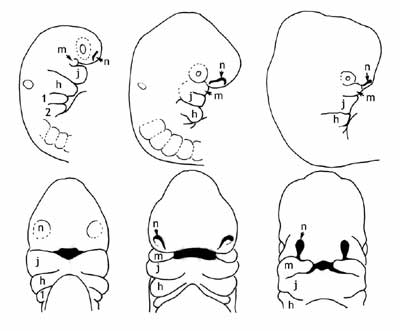
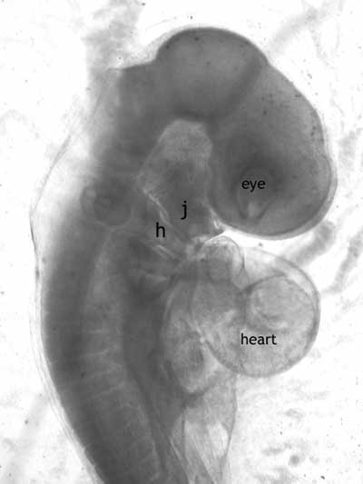
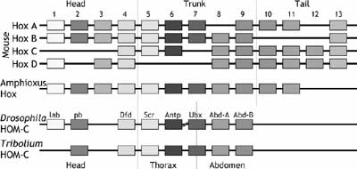

Andere Links:
|
Die Geschichte von Haeckels Embryonen unterscheidet sich in einer wichtigen Hinsicht von der der anderen Kapitel in Jonathan Wells' Buch. Wie die anderen Autoren zeigen, hat Wells Ideen, die im Kern wahr sind, verzerrt, um seinen Punkt zu untermauern: Trotz aller gegenteiligen Rhetorik ist das Archaeopteryx ein Übergangsfossil, gestreifte Motten und Darwins Finken erzählen uns bedeutende Dinge über die Evolution, und vierflügelige Fliegen erzählen uns bedeutende Dinge über Entwicklungswege und so weiter. In diesen Teilen des Buches muss Wells versuchen, eine Wahrheit zu verdecken, indem er sie missversteht und falsch darstellt.
Im Fall von Haeckel muss ich jedoch zunächst zugeben, dass Wells den Kern der Geschichte richtig erfasst hat. Haeckel hatte unrecht. Seine Theorie war ungültig, einige seiner Zeichnungen waren gefälscht, und er interpretierte die Daten willentlich überdehnt, um eine falsche These zu stützen. Darüber hinaus war er einflussreich, sowohl in den Wissenschaften als auch in der populären Presse; seine Theorie wird bis heute in letzterer wiederholt. Wells hat auch recht damit, die Autoren von Lehrbüchern zu kritisieren, die Haeckels berüchtigtes Diagramm ohne Kommentar zu seinen Unzulänglichkeiten oder zur Art und Weise, wie es zur Unterstützung einer widerlegten Theorie missbraucht wurde, weiterverbreiten.
Leider versucht Wells in diesem Kapitel, diese ungültige, diskreditierte Theorie zu nehmen und die moderne (und sogar nicht ganz moderne) Evolutionsbiologie damit zu beschmutzen. Das biogenetische Gesetz ist jedoch nicht Darwinismus oder Neodarwinismus. Es gehört nicht zu irgendeiner modernen evolutionären Theorie. Wells führt hier einen Tauschbetrug durch: Er sammelt die Beweise und Zitate, die das haeckelsche Dogma tatsächlich widerlegen, und behauptet dann, dies sei Teil unseres „besten Beweises für Darwins Theorie".
Wer war Haeckel und was war seine Theorie?
Ernst Haeckel (1834-1919) war ein äußerst einflussreicher deutscher Wissenschaftler. Er genoss als vergleichender Embryologe eine beneidenswerte Reputation, doch sein Hauptanspruch auf Ruhm bestand darin, dass er ein früher Befürworter von Darwins Theorie war, der die Evidenz der Embryologie nutzte, um die Evolution zu stützen. Wells hat völlig recht, die Bedeutung von Haeckel in der Biologie des 19. Jahrhunderts zu erwähnen. Es besteht kein Zweifel daran, dass seine Bemühungen, die Theorie zu popularisieren, wichtig waren, um der Evolution Glaubwürdigkeit in der wissenschaftlichen Gemeinschaft und auch bei Laien zu verschaffen. Darwin und Haeckel trafen sich und korrespondierten, und jeder beeinflusste die Theorien des anderen stark. Allerdings verdankten Haeckels Theorien einer früheren philosophischen Tradition eine noch größere Schuld, insbesondere den Arbeiten von Goethe und Lamarck. Obwohl Darwin Haeckels Unterstützung für die natürliche Selektion zu schätzen wusste, war er auch zurückhaltend darin, Haeckels Ideen in seinen Schriften zu verwenden; Darwin stützte sich weit mehr auf von Baers embryologische Daten, um die gemeinsame Abstammung zu belegen.
Darüber hinaus war Haekels Theorie im Kern faul. Sie war sowohl im Prinzip falsch als auch in der Reihe von voreingenommenen und manipulierten Beobachtungen, die dazu dienten, sie zu stützen. Dies war eine Tragödie für die Wissenschaft, da sie evolutionäre Biologen und Embryonalbiologen auf einen Sackgasse führte, was zu einem unglücklichen Zerwürfnis zwischen den Bereichen Entwicklung und Evolution führte, das erst kürzlich korrigiert wurde.
Haeckels Theorie ist in seinem einprägsamen Aphorismus „Ontogenie recapituliert Phylogenie" zusammengefasst, auch als biogenetisches Gesetz bezeichnet. Was das bedeutet, ist, dass die Entwicklung (Ontogenie) die evolutionäre Geschichte (Phylogenie) des Organismus wiederholt – dass wir also, wenn wir von einem Fisch abstammen, der zu einem Reptil wurde, das zu uns wurde, unsere Embryonen diese Geschichte physisch widerspiegeln, indem sie eine fischähnliche Phase durchlaufen und dann in eine reptilienähnliche Phase übergehen. Wie konnte dies geschehen? Er argumentierte, dass die evolutionäre Geschichte wörtlich die treibende Kraft hinter der Entwicklung sei und dass die Erfahrungen unserer Vorfahren physisch in unser Erbmaterial geschrieben wurden. Dies war eine logische Erweiterung seines Glaubens an die Lamarck'sche Vererbung oder die Vererbung erworbener Merkmale. Wenn die Aktivität eines Organismus auf seine Genetik geprägt werden kann, dann könnte die Entwicklung einfach eine Zusammenfassung der Aktivitäten der Eltern, Großeltern und immer weiter entfernter Vorfahren sein. Dies war eine extrem attraktive Idee für Wissenschaftler; es ist, als ob die Entwicklung eine Zeitmaschine wäre, die es ihnen ermöglichte, nur durch das Studium früher Entwicklungsstadien in die ferne Vergangenheit zurückzublicken.
Leider war es auch völlig falsch.
Die Entdeckungen, die letztlich die zugrundeliegenden Prämissen des biogenetischen Gesetzes zerstörten, waren die Prinzipien der Genetik und empirische Beobachtungen von Embryonen. Lamarckische Vererbung findet einfach nicht statt, wie wir alle in der Mittelschulbiologie gelernt haben. DNA ist das Vermittlungsorgan der Vererbung, und sie wird durch unsere gewöhnlichen Handlungen nicht verändert – wenn Sie sich ein Tattoo tätowieren lassen, wird dies nicht auch in die Chromosomen Ihrer Spermien oder Eizellen eingetragen, und es besteht keine Gefahr, dass Ihre Kinder mit „Mom" auf ihrem Arm geboren werden. Die Entdeckung, dass Haeckel bei seinen Illustrationen unforgivable Shortcuts genommen hatte, war für seine Theorie ein relativ geringes Problem, weil der allgemeine Kern seiner Beobachtungen (dass Wirbeltierembryonen sich stark ähneln) unabhängig bestätigt wurde. Was die gesamte Theorie wirklich zum Scheitern brachte, war, dass ihre Grundlage entfernt wurde, was die Behauptung von Wells, Biologen versuchten, die „Rekapitulation wiederzubeleben", eher seltsam macht, da nicht sehr viele die Gültigkeit der Lamarckischen Vererbung sehen.
Wells möchte auch, dass der Leser glaubt, Haeckels Embryonen seien ein Schlüsselstück des Puzzles gewesen, das Darwin selbst verwendet habe, um seine Theorie zusammenzustellen, und dass Darwinismus daher auf einem falschen Fundament errichtet wurde. Er erwähnt jedoch eine wichtige chronologische Tatsache nicht. Darwins Ursprung der Arten wurde 1859 veröffentlicht, nach Jahrzehnten der Forschung. Haeckels Theorie wurde erstmals 1866 veröffentlicht, und Haeckels Diagramme wurden 1874 veröffentlicht. Haeckel hatte keinen signifikanten Einfluss auf das Ursprung der Arten, aber Darwin (und Lamarck sowie eine Reihe deutscher Philosophen, wie Goethe) haben Haeckel tiefgreifend beeinflusst. Offensichtlich wurden die späteren Ausarbeitungen Darwins zur Evolutionstheorie durch Haeckels Ideen, insbesondere seine Ideen zur Vererbung, ergänzt, aber genau diese Komponenten des Darwinismus wurden durch die Mendelsche Genetik und die neodarwinistische Synthese widerlegt!
Was ist die phylotypische Stufe?
Darwin sagte: „Kaum ein Punkt erfüllte mich bei der Arbeit am Origin mit so viel Befriedigung wie die Erklärung der weitreichenden Unterschiede zwischen Embryo und erwachsenem Tier in vielen Klassen und die enge Ähnlichkeit der Embryonen innerhalb derselben Klasse." Anfang des 19. Jahrhunderts stellte von Baer fest, dass Embryonen verschiedener Arten nicht so leicht voneinander zu unterscheiden sind wie die Erwachsenen. Dies ist eine einfache Beobachtung, die in den letzten paar hundert Jahren unzählige Male gemacht wurde, eine Beobachtung, die nicht an eine bestimmte Theorie gebunden ist, sei es der Schöpfung oder der Evolution – von Baer selbst machte diese Beobachtungen 30 Jahre vor der Veröffentlichung durch Darwin und akzeptierte damals oder später die Evolution nicht. Das heißt, während erwachsene Wirbeltiere sich sehr voneinander unterscheiden können, durchlaufen alle Wirbeltierembryonen eine Entwicklungsphase, in der sie sich gegenseitig stärker ähneln. Diese Phase wird als phylotypische Stufe bezeichnet. Zu diesem Zeitpunkt in der Entwicklung exprimieren alle Wirbeltierembryonen eine Reihe von Merkmalen, die für die gesamte Wirbeltierlinie gemeinsam sind: sie besitzen einen Notochord und einen dorsalen Nervenkord, sie haben Pharyngealbögen und einen Schwanz, und sie verfügen über eine wiederholte Reihe von Muskelblöcken, die Somiten genannt werden. Die meisten Merkmale, die verschiedene Wirbeltiergruppen unterscheiden, wie Gliedmaßen oder Flossen, Haare oder Federn oder Schuppen, sowie Flügel oder Unterarme, haben sich noch nicht entwickelt. Darüber hinaus wissen wir nun, dass dies die Phase ist, in der eine Reihe entscheidener Musterbildungs-Gene (die emx/otx/Hox-Gene) erstmals exprimiert werden und den molekularen Bauplan des Körpers festlegen.
Die Beobachtung ist nicht an eine bestimmte Theorie gebunden, aber wir müssen dennoch die Existenz dieses Phänomens in jeder Theorie der Ursprünge erklären. Haeckel hat es versucht. Seine Erklärung war ein fehlerhaftes Modell der Vererbung, das behauptete, es gäbe Einschränkungen für die Eigenschaften der Genetik, so dass nur die letzten Phasen leicht modifiziert werden konnten. Dies bedeutete, dass neue Merkmale in der Regel erst am Ende des Entwicklungsprogramms hinzugefügt wurden, sodass die Reihenfolge der Entwicklung ungefähr der Reihenfolge der Evolution entsprach. Diese Erklärung wurde jedoch widerlegt. Nicht nur funktioniert die Genetik nicht so, sondern die Entwicklung verläuft nicht in einer Weise, die der evolutionären Sequenz ähnelt; wie Wells feststellt (und damit Kritiken wiederholt, die seit über einem Jahrhundert geäußert wurden), können die frühesten Entwicklungsstadien sich radikal unterscheiden. Sie konvergieren dann in einem ähnlichen Aussehen am phylotypischen Stadium und divergieren in der Morphologie erneut.
Moderne Theorien der Entwicklung und Evolution schlagen etwas vor, das den Beobachtungen entspricht und das Wells nicht leicht ablehnen kann. Gene können so modifiziert werden, dass sie praktisch zu jedem Zeitpunkt der Entwicklung wirken, sodass die theoretische Einschränkung, die von Haeckel aufgebracht wurde, nicht existiert. Unterschiede zwischen Arten in den frühesten Stadien waren für Haeckel ein Problem, sind aber mit der modernen Entwicklungsbiologie überhaupt nicht unvereinbar. Es besteht sogar keine Anforderung an eine absolute morphologische Identität im phylotypischen Stadium. Wie Wells feststellt, hat Michael Richardson Variationen innerhalb dieses Stadiums zwischen Arten identifiziert.
In Icons of Evolution argumentiert Wells, indem er Haeckels Erklärung ausschließlich angreift und moderne Ansätze ignoriert, wie er ein totes Pferd schleppt. Darüber hinaus leistet er keinen Beitrag zu unserem Verständnis dafür, warum Wirbeltiere sich so entwickeln, wie sie es tun. Warum sollten Tiere, die als Erwachsene unterschiedlich aussehen, Ähnlichkeiten als Embryonen aufweisen? Warum haben menschliche Embryonen Schwänze und bilden ihre Gesichter aus derselben embryonalen Grundlage, die Fische nutzen, um Kiemen zu bilden? Dies sind Fragen, die Wells nicht beantwortet, und sein Ansatz scheint darin zu bestehen, stattdessen zu argumentieren, dass sie keine Ähnlichkeiten als Embryonen aufweisen. Doch das tun sie. Diese Ähnlichkeiten sprechen für gemeinsame Abstammung.
Was ist mit den frühen Unterschieden in der Entwicklung?
Wells legt viel Wert darauf, dass das biogenetische Gesetz davon ausgeht, dass Embryonen am frühesten möglichen Entwicklungsstadium am ähnlichsten sein sollten, während die Phase der größten Ähnlichkeit, die phylotypische Phase, erst weit fortgeschritten im Entwicklungsverlauf auftritt und dass die frühesten Stadien scheinbar signifikante Unterschiede aufweisen. Das ist zwar richtig, aber irrelevant.
- Das biogenetische Gesetz ist nicht Darwinismus. Es ist leicht, Lücken im biogenetischen Gesetz zu finden; dies wurde in der wissenschaftlichen Literatur wiederholt getan, und es schadet der modernen evolutionären Biologie überhaupt nicht.
- Diese Beobachtung ist keine Neuigkeit. Von Baer wies in den 1820er Jahren darauf hin, dass die frühesten Gewebe, die sich im Säugetierembryo differenzieren, die extraembryonalen Membranen sind, die zufällig auch zu den jüngsten Merkmalen in der Säugetierlinie gehören, die sich entwickelt haben. Die Abbildung, die Wells verwendet, um diesen Punkt zu machen (Abbildung 5-3), ist eine neu gezeichnete Version einer ähnlichen Abbildung, die von Elinson 1987 veröffentlicht wurde.
- Wells minimiert die Ähnlichkeiten, die bestehen, um die Unterschiede zu betonen. Dies ist dasselbe verzerrte Spiel, das Haeckel spielte: der einzige Unterschied besteht darin, dass er die Ähnlichkeiten betonte, anstatt die Unterschiede.
Dieser letzte Punkt bedarf weiterer Erläuterung. Was die moderne Entwicklungsbiologie entdeckt hat, ist, dass diese frühesten Stadien bei verschiedenen Wirbeltierembryonen substantiell ähnlich sind. Die Unterschiede sind oberflächlich und in vielen Fällen eine Folge unterschiedlicher Mengen an mütterlicher Investition. Zum Beispiel ist eine der ersten Aufgaben eines befruchteten, einzelligen Eies, sich wiederholt zu teilen, um eine große Anzahl von Zellen zu produzieren. Bei Tieren, die eine große Menge an Dotter haben, wie bei einem Fisch, Reptil oder Vogel, ist der Dotter zu groß, um effizient geteilt zu werden, sodass sich die Zelle teilweise teilt und eine Kappe von Zellen auf dem Dotter bildet. Bei Tieren, die relativ wenig, gut verteilten Dotter haben, wie der Frosch, oder gar keinen Dotter haben, wie bei Säugetieren, kann sich das Ei vollständig teilen und bildet eine Kugel von Zellen. Das ist das Ausmaß des Unterschieds, ob Sie eine Masse von Zellen allein haben oder eine Masse, die auf einem Dotter ausgebreitet liegt.
Diese Unterschiede in der Form führen zu einigen scheinbaren Unterschieden im nächsten Entwicklungsschritt, der Gastrulation. Die kritische Funktion der Gastrulation besteht darin, dass sich einige Zellen nach innen bewegen, in die Zellmasse. Diese Bewegung von Zellblättern erzeugt die dreidimensionale Struktur des Embryos und bietet während des Prozesses den Zellen die Möglichkeit, zu interagieren und neue Gewebetypen zu induzieren. Ob der Embryo nun eine Kugel aus Zellen oder eine Masse auf einem Dotter ist, alle Wirbeltiere führen während der Gastrulation äquivalente Bewegungen aus; erneut sind die Unterschiede oberflächlich und hängen davon ab, ob sich der Zellhaufen zu einer Kugel zusammenballt oder abgeflacht ist. Es gibt weitere Unterschiede, die katalogisiert werden können, wie zum Beispiel, ob sich die Zellen als zusammenhängendes, adhäsives Blatt nach innen bewegen oder ob sie sich ablösen und als einzelne Zellen eindringen, aber erneut ist der Kernprozess, dass sie sich nach innen bewegen, um neue Schichten zu bilden, derselbe.
Auf einer fundamentaleren Ebene scheint es, dass Wirbeltiere eine gemeinsame Gruppe von Signalstoffen teilen, wie BMP-4 und Chordin, die wichtig sind, um die Polarität zu definieren und Gewebetypen in diesen frühen Stadien zu spezifizieren. Die Prozesse der Zellsignalisierung, die für die Induktion neuer Gewebe während der Gastrulation wichtig sind, sind bei allen Wirbeltieren ähnlich, und dieselben Antworten finden sich bei Fischen und Mäusen, trotz der morphologischen Unterschiede in ihren Aufbauten. Es ist irreführend, sich auf scheinbare Unterschiede in der Form auf einer groben Ebene zu konzentrieren, wenn die tieferen, molekularen Aspekte dieser Entwicklungsstadien homolog sind.
Was ist mit "Kiemenspalten" falsch?
Wells ist mit dem üblichen Begriff „Kiemenspalten" höchst unzufrieden. Er widmet mehrere Seiten der Darstellung, dass embryonale Säugetiere keine Kiemen besitzen und dass selbst in den Stadien, in denen Fische Kiemenspalten aufweisen, keine Kiemen vorhanden sind. Er verfehlt jedoch den Punkt: Niemand behauptet, sie besäßen Kiemen. Sie besitzen „Kiemenspalten", was eine völlig andere Sache ist. Er hat sich so sehr in ein trivialen etymologischen Argument verstrickt, dass er die biologische Realität völlig aus den Augen verloren hat.
Wirbeltier-Embryonen weisen universell ausgeprägte Strukturen in ihrem Halsbereich auf, die in der wissenschaftlichen Literatur unter verschiedenen Namen bezeichnet werden: branchiale, pharyngeale oder viszerale Taschen, Gruben oder Furchen oder Bögen. Da sie als wiederholte Reihe von Spalten im Hals des Embryos erscheinen können, die dem Muster wiederholter Elemente im Hals erwachsener Fische ähneln, werden sie umgangssprachlich auch als „Kiemenspalten" oder „Kiementaschen" bezeichnet. Sie sind jedoch keine Kiemen – und Wissenschaftler behaupten dies auch nicht (Wells zitiert sogar mehrere Autoren, Wolpert und Rager, die diese einfache, offensichtliche Tatsache ausdrücklich festhalten). Also, was sind sie?
"Kiemenspalten" sind übliche strukturelle Elemente der Entwicklung des Kopfes und Gesichts bei Wirbeltieren. "Üblich" ist hier der wichtige Begriff. Es stellt sich heraus, dass alle Wirbeltiere ihr Gesicht auf dieselbe, etwas unwahrscheinliche und gegenintuitive Weise bilden; es ist diese tiefe Ähnlichkeit, die die Grundlage des evolutionären Arguments ist, dass sie gemeinsame Abstammung widerspiegelt.
Der Kopf aller Wirbeltierembryos, ob sie nun Fische oder Menschen sind, kann einfach als ein gekrümmter Schlauch beschrieben werden, der größtenteils aus dem vermuteten Gehirn (Abbildung 2) besteht, mit einer Reihe von 4 bis 7 fingerartigen Geweben, die von ihm herabhängen, den Pharyngealbögen. Das, was wir als Gesicht betrachten, alles von knapp unter den Augen bis zurück zu den Ohren und hinab zum Hals, fehlt. Stattdessen haben wir diese herabhängenden Klumpen, jeder von denen einen knorpeligen Stab, eine Muskelkolonne, einen bedeutenden Ast des Kreislaufsystems und eine Auswahl anderer Zelltypen enthalten wird. Diese Bögen sind wiederholte Module, die sich später verschmelzen und neu anordnen werden (zusammen mit anderen Schädelgeweben, vor allem einer wandernden Zellpopulation von der Oberseite des Kopfes, dem Neuralleisten) um das vertrautere Gesicht zu bilden. Sie tun dies bei allen Wirbeltieren auf ähnliche Weise: der erste Pharyngealbogen bildet beispielsweise immer das Kiefergelenk, und der zweite Bogen bildet immer den Hyoid. Es gibt auch Unterschiede, die in verschiedenen Klassen auftreten. Teile der ersten beiden Bögen finden ihren Weg in die Knochen des menschlichen Ohres. Der dritte und die nachfolgenden Bögen bei Fischen enden in den Kiemen, während dieselben Bögen beim Menschen eine Reihe von Knorpeln im Hals bilden. Der dritte verschmilzt mit dem Hyoid, der vierte bildet einen wesentlichen Teil des Schildknorpels, und der fünfte bildet den Ringknorpel und die Arytenoidknorpel. Nichtknorpelige Elemente dieser Strukturen werden in alle Arten von Geweben, Drüsen und Muskeln sowie Epithelien des Halses und Gesichts integriert.
 |
Dieses gemeinsame Entwicklungsmuster ist eine wirklich bemerkenswerte Sache. Es ist einer der Gründe, warum frühe evolutionäre Biologen wie Charles Darwin argumentierten, dass die Evidenz der Embryologie für seine Theorie so wichtig war – wir sehen solche komplexen Prozesse immer wieder auf ähnliche Weise bei Art nach Art wiederholt. Da die initialen Pharyngealbögen im Laufe der Entwicklung radikal umgestaltet werden, gibt es keinen offensichtlichen Grund, warum alle Wirbeltierembryonen mit nahezu identischen Strukturen beginnen, die gleich weit von ihrer endgültigen Morphologie entfernt sind, außer dass sie eine gemeinsame morphologische Grundlage und eine gemeinsame Abstammung widerspiegeln.
Wells möchte all dies leugnen. Um dies zu tun, konzentriert er sich ausschließlich auf die Terminologie. Er weist darauf hin, dass „Kiemenspalten" keine Kiemen sind, eine Tatsache, die von jedem Entwicklungsbiologen gut verstanden wird. Er sagt: „Sie sind niemals „kiemenähnlich", außer im oberflächlichen Sinne, dass sie eine Reihe paralleler Linien im Halsbereich bilden." Das ist wahr, und niemand beansprucht eine tiefere Bedeutung für den Begriff als diese. Wells versucht jedoch dann, zu behaupten, dass „Der einzige Weg, „kiemenähnliche" Strukturen in menschlichen Embryonen zu sehen, darin besteht, Evolution in die Entwicklung hineinzuinterpretieren" und dass „es keinen Weg gibt, auf dem „Kiemenspalten" in menschlichen Embryonen logisch als Beweis für die Evolution dienen können." Diese Aussagen sind falsch und irreführend. Wie er selbst bereits festgestellt hat, ist einer der Wege, „kiemenähnliche" Strukturen in Embryonen zu erkennen, darin zu sehen, dass sie ein wiederholtes Muster von Linien im Hals bilden – das setzt keine Evolution voraus und ist eine legitime Grundlage für den Namen. Natürlich müssen wir dann fragen, warum menschliche Embryonen diese seltsamen Linien haben und warum alle anderen Wirbeltiere sie ebenfalls besitzen... und diese Gemeinsamkeit der Struktur ist der Beweis für die Evolution, nicht die oberflächlichen Implikationen der Namen.
Alle Wirbeltierembryonen besitzen Pharyngealbögen. Dass diese Strukturen in Lehrbüchern manchmal mit dem einfacheren Begriff „Kiemenspalten" bezeichnet werden, bedeutet nicht, dass sie nicht existieren oder dass die Homologie verschwindet, obwohl dies das Spiel ist, das Wells spielen möchte.
Wo sind alle Rekaptulationsisten?
Eine Prämisse, die Wells in diesem Kapitel regelmäßig vorbringt, ist, dass evolutionäre Biologen auf die falschen Lehren von Haeckel zurückgegriffen haben, um das darwinistische Dogma zu stützen. Er behauptet, dass haeckelische Theorien „periodisch, phönixartig, aus den Asche der empirischen Widerlegung" im 20. Jahrhundert wieder auferstanden seien. Er verwendet Überschriften wie „Die Auferstehung der Recapitulation" und „Haeckel ist tot. Lange lebe Haeckel." Er wirft Biologen eine Verschwörung des Schweins vor, die Mängel in Haeckels Werk einerseits zu verbergen und andererseits als Beleg für die Evolution zu verwenden.
Keines davon ist wahr.
Dies ist so offensichtlich, dass wir nur Wells' eigene Forschung nutzen müssen, um dies zu zeigen. Er zitiert eine Reihe von Autoren, die sich mit Haeckel oder dem biogenetischen Gesetz befassen:
- Adam Sedgwick, 1894
- William Garstang, 1922
- Gavin de Beer, 1958
- William Ballard, 1976
- Stephen J. Gould, 1977
- Richard Elinson, 1987
- Jane Oppenheimer, 1987
- Michael Richardson, 1995
- Stephen J. Gould, 2000
Dennoch ist hier das Überraschende: Alle diese Autoren verurteilen die Idee, dass die embryonale Entwicklung dem evolutionären Muster folgt, in unzweideutigen Worten! Sedgwick hat beispielsweise eine umfangreiche Liste von Einwänden gegen die Rekurrenzformulierung von von Baer und Haeckel zusammengestellt und diese spezifisch als unhaltbar abgelehnt – im Jahr 1894. Dies stellt über ein Jahrhundert eindeutiger Ablehnung der Rekurrenz dar. Das Datum kann noch weiter zurückverlegt werden, da von Baer seine Kritik an rekurrenzinterpretationen seiner Beobachtungen bereits 1828 veröffentlichte. Wells zitiert diese Autoren, um sein Argument zu stützen, dass Haeckels Ideen falsch sind, gleichzeitig versucht er jedoch vorzutäuschen, dass evolutionäre Biologen alle heimliche Fans von Haeckel sind. Wenn dies der Fall ist, wo sind dann die Zitate zu prominenten modernen Wissenschaftlern, die seine Theorien verteidigen?
Der Fall von Stephen J. Gould illustriert Wells' zweigeteilte Strategie besonders gut. Im Jahr 1977 schrieb Gould ein hervorragendes wissenschaftliches Buch über die verwobene Geschichte der Embryologie und der Evolution, betitelt Ontogeny and Phylogeny. Wie sich aus dem Titel erraten lässt, ist Haeckel eine prominente Figur im Buch, und seine Theorien sowie deren Konsequenzen auf dem Gebiet werden detailliert und ohne Erbarmen zerlegt. Gould kehrte auch in seiner Kolumne im Magazin Natural History im Jahr 2000 zu diesem Thema zurück, wobei er seine Kommentare auf die Entdeckung einer scharfen Kritik an Haeckel durch einen seiner Zeitgenossen, Louis Agassiz, konzentrierte. Gould hat auch andere verwandte Artikel verfasst, in denen er Textbuchautoren wegen ihrer verwerflichen Gewohnheit, Text und Abbildungen weit über das Maß des Angemessenen hinaus zu recyclieren, herabsetzt. Doch wie verdreht Wells die Fakten? Er behauptet, Gould habe "...(obwohl er die Wahrheit seit über zwanzig Jahren kannte) den Mund gehalten, bis ein 'Kreationist' (tatsächlich ein Biologe) [er bezieht sich hier auf Michael Behe] das Problem aufdeckte"!
Dies ist ein bemerkenswertes Beispiel für die Art von unehrlichem Doppelgesicht, das Wells in seinem gesamten Buch verwendet. Er kann Autor nach Autor zitieren, die zwischen 1894 und 2000 eindeutig Haeckels Ideen verurteilen, und gleichzeitig behaupten, Biologen hätten im 20. Jahrhundert die „Wiederauferstehung der Recapitulationstheorie" betrieben. Er behauptet, Behe habe „das Problem aufgedeckt", doch Behe hat keine Forschung in der Embryologie betrieben, hat nichts Originäres zur Geschichte der Wissenschaft des 19. Jahrhunderts veröffentlicht und verdient hier kein Lob – dieses „Problem" wurde vor über einem Jahrhundert aufgedeckt, und die eigentliche kreative und innovative Arbeit in der embryologischen Analyse, die hier geleistet wird, stammt von einem Evolutionisten, Michael Richardson, nicht von Behe. Ich bin auch überrascht, dass Gould ein fast 500 Seiten langes Buch veröffentlichen kann, das kritisch gut aufgenommen wurde und häufig zitiert wird, und dennoch beschuldigt werden kann, zum Thema den Mund zu halten!
Gould ist nicht allein. Der Autor eines der einflussreichsten Lehrbücher in der Entwicklungsbiologie, Scott Gilbert, beschrieb das biogenetische Gesetz als „katastrophal" und „unhaltbar". Raff und Kaufman führten denselben Einwand gegen Haeckel vor, den Wells hier ebenfalls erhebt; daher ist es nicht überraschend, was Wells uns lehrt.
Sind die Lehrbücher wirklich so schlecht?
Wells ist besonders empört über die Autoren von Einführungstextbüchern, die, wie er behauptet, ihre Schüler irreführen. Ich stimme zu, dass er vernünftigerweise argumentieren kann, dass Textbücher die veralteten und ungenauen Zeichnungen verwenden sollten, die nach Haeckels Arbeit erstellt wurden, aber in dem, was ich für den amüsantesten Satz in diesem gesamten Kapitel halte, äußert Wells Entrüstung darüber, dass „Einige Textbücher anstatt Haeckels Embryonen abzubilden oder neu zu zeichnen, tatsächliche Fotos verwenden." Wie wagen diese schädlichen Textbuchautoren fotografische Daten, um ihre Ideen zu stützen!
In seinem ersten Anhang bewertet Wells eine Reihe von Hochschul-Lehrbüchern und vergibt ihnen Buchstabennoten dafür, wie gut deren Ideen mit seinen übereinstimmen. Alle Bücher bekommen für ihre Behandlung von Wirbeltier-Embryonen entweder eine D oder eine F. Es ist jedoch offensichtlich, dass er die Karten gegen sie stapelt.
Um eine F zu erhalten, reicht es einem Lehrbuch, eine Version der Zeichnungen von Haeckel zu verwenden, zu behaupten, dass frühe Ähnlichkeiten in Wirbeltier-Embryonen Beweise für die gemeinsame Abstammung sind und auf Kiemenspalten hinzuweisen. Ich stimme zu, dass Bücher die Illustrationen von Haeckel nicht verwenden sollten, es sei denn, es soll ein historischer Punkt gemacht werden. Ähnlichkeiten in der Struktur sind jedoch Beweise für die gemeinsame Abstammung; es ist etwas unfair, ein Buch dafür zu bestrafen, dass es einen gültigen Punkt macht. Ebenso haben Wirbeltier-Embryonen tatsächlich „Kiemenspalten", auch wenn die Assoziationen dieses Begriffs Dr. Wells verwirren.
Um ihre Note auf ein D zu verbessern, verwendet ein Buch „irreführende Fotografien" echter Embryonen anstelle der Haeckel-Zeichnungen. Doch was ist hier der Einwand? Es handelt sich nicht um manipulierten oder ungenauen Zeichnungen. Es sind Fotografien von Wirbeltierembryonen, die genau zeigen, wie sie aussehen – etwas, das jeder mit einem Mikroskop und Zugang zu Embryonen selbst beobachten kann (Abbildung 3). Steht als nächstes auf seiner Agenda, Klassen zu verurteilen, die es Schülern erlauben, lebende oder konservierte Embryonen im Labor zu untersuchen?
 |
Was muss ein Lehrbuch tun, um eine Note A zu erhalten? Erstens darf es keine irreführenden Zeichnungen oder Fotos verwenden. Wells hat nicht nachgewiesen, dass die in diesen Büchern verwendeten Fotos überhaupt irreführend sind. Zweitens sollte der Begriff „Kiemenöffnung" nicht verwendet werden. Dies ist eine willkürliche Anforderung; es gibt nichts Kategorisch Falsches an diesem speziellen Begriff.
Drittens sollte es Ähnlichkeitsunterschiede in den frühesten Stadien besprechen (was eine gute Idee ist, aber in einem Einführungstext möglicherweise unpraktisch sein kann) und dies als Problem für die darwinistische Evolution bezeichnen. Es besteht jedoch eine Schwierigkeit, dieser letzten Anforderung gerecht zu werden. Die Unterschiede können zwar ein Problem für ein haeckelsches Modell der Evolution sein, stellen sie aber für moderne Formulierungen der Evolution nicht ein Problem dar. Ein Buch, das vorschlägt, dass die frühen Unterschiede ein Problem darstellen, würde sich anstrengen, die Beweise zu missdeuten.
Schließlich ist seine vierte Forderung, dass das Buch Darwins Theorie der Wirbeltierentstehung als falsch betrachten muss. Ich nehme an, dass dies bedeutet, es müsse Beobachtungen an Wirbeltierembryonen verwenden, um irgendwie zu argumentieren, dass verschiedene Wirbeltiere nicht von einem gemeinsamen Vorfahren abstammen. Leider folgt dieser Schluss nicht aus den Beweisen. Die tiefgreifenden Ähnlichkeiten in den Entwicklungsprozessen aller Wirbeltiere stützen die Idee, dass sie Teil einer gemeinsamen Abstammungslinie sind; zudem bestätigen Fortschritte in der molekularen Biologie der Entwicklung beständig noch größere Homologien – es ist einfach keine Option, auch nur zu suggerieren, dass diese Organismen keinen gemeinsamen Vorfahren hatten.
Eines der Lehrbücher, das Wells eine "D" Note verleiht, ist eines, von dem ich seit mehreren Jahren unterrichte, Campbells Biology. Ich habe mir den relevanten Abschnitt dieses speziellen Buches genau angesehen. Ich fand sofort einen ernsthaften Mangel: dieser Abschnitt ist nur zwei Absätze lang, mit einer Abbildung. Es wäre gut, mehr Substanz zu diesem Thema zu sehen, besonders in einem Buch, das 1175 Seiten lang ist, doch ein wiederkehrendes Problem in den Büchern, die Wells angegriffen hat, ist, dass dies Übersichten der gesamten Biologie sind, von der Biochemie bis zur Ökologie, sodass es nicht zu überraschend ist, dass alles weniger tiefgehend behandelt wird, als wir es gerne hätten. Dennoch habe ich nichts in dem, was Campbell geschrieben hat, das als anstößig zu betrachten wäre. Er beginnt mit der Feststellung, dass "Eng verwandte Organismen ähnliche Stadien in ihrer embryonalen Entwicklung durchlaufen", und illustriert dies mit einem Foto eines vogel- und eines Säugetierembryos. Diese Aussage ist korrekt, und die Abbildung unterstützt den Punkt. Er schließt den Abschnitt damit ab, dass er Haekels Ideen explizit korrigiert, indem er sagt, dass "Die Theorie der Recapitulation eine Übertreibung ist. Obwohl Wirbeltiere viele Merkmale der embryonalen Entwicklung gemeinsam haben, ist es nicht so, als würde ein Säugetier zuerst durch eine 'Fisch-Stadium', dann ein 'Amphibien-Stadium' und so weiter gehen. Ontogenie kann Hinweise auf Phylogenie geben, aber es ist wichtig zu bedenken, dass alle Entwicklungsstadien im Laufe der Evolution modifiziert werden können." Dies ist völlig korrekt. Ich sehe keine Faktenfehler in Campbells Behandlung des Themas, obwohl ich denke, dass es bedauerlich ist, dass so wenig Raum dafür übrig bleibt.
Dies soll nicht suggerieren, dass Lehrbücher fehlerfrei sind. Ich stimme Wells zu, dass die Verzerrungen durch Balinski in seinem Text von 1975, um das biogenetische Gesetz zu rationalisieren, verwerflich sind. Ich stimme ebenfalls zu, dass Lehrbücher, die diesem speziellen Thema ohnehin wenig Raum widmen, nicht mit Haeckels Abbildung Zeit verschwenden sollten, die keine guten biologischen Daten liefert und nur von historischem Interesse ist. Wells geht jedoch zu weit. Er versucht, eine alte (wenn auch einflussreiche) Verzerrung zu nutzen, um eine Vielzahl völlig gültiger Beobachtungen wegzuwerfen, in seinem Versuch, einige logische Schlussfolgerungen zu diskreditieren, die mit seinen Vorurteilen in Konflikt stehen.
Welche Lektion sollten wir aus Embryonen lernen?
Wells sendet in seiner Diskussion über Haeckels Embryonen die falsche Botschaft. Er möchte, dass seine Leser glauben, die Biologie habe zunehmend Diskrepanzen in den Prinzipien der Entwicklung festgestellt, Diskrepanzen, die die Evolution in Frage stellen, indem sie die Einheit der Wirbeltierlinie anzweifeln. Nichts könnte weiter von der Wahrheit entfernt sein. Die Molekularbiologie hat uns insbesondere gezeigt, dass es einen größeren Grad an Ähnlichkeit zwischen Arten gibt, als zuvor vermutet.
Die Hox-Gene veranschaulichen beispielsweise diese Beziehung. Es handelt sich um eine Gruppe von Genen, die sich durch eine Reihe von Merkmalen auszeichnen: Sie teilen alle eine gemeinsame Sequenz von 180 Basenpaaren, die Homeobox genannt wird (wovon auch ihr Name abgeleitet ist), sie sind alle DNA-bindende Proteine, die dazu dienen, andere Gene ein- oder auszuschalten, und sie weisen eine einzigartige Organisation auf. Sie sind alle auf dem Chromosom in einer Reihenfolge angeordnet, die der Reihenfolge ihrer Expression entspricht: Das heißt, ein Hox-Gen, das im Kopf aktiviert wird, befindet sich an einem Ende des Genclusters, ein Hox-Gen, das im Schwanz aktiviert wird, befindet sich am anderen Ende, und alle dazwischen liegenden Gene sind in entsprechender räumlicher Anordnung (Abbildung 4). Diese Gene sind an der Musterbildung des Organismus beteiligt und legen den allgemeinen Körperplan fest. Sie wirken so, dass sie spezifizieren, wo sich beispielsweise der Kopf, der Hals oder die Lendenregion bilden soll. Interessanterweise werden diese Gene erstmals im phylotypischen Stadium aktiviert. Ein guter Grund für die Erhaltung der Morphologie im phylotypischen Stadium besteht darin, dass dies der Zeitpunkt ist, an dem diese Gene untereinander und mit anderen Genen interagieren müssen, um den Bauplan für die nachfolgende Entwicklung zu entwerfen. Es gibt globale Interaktionen zwischen Genen, und Gene können an mehreren Stellen wiederverwendet werden. Beispielsweise haben mehrere Gewebe die Fähigkeit gezeigt, Linsengewebe zu induzieren, einschließlich des Herzmesoderms, und eine Änderung des Zeitpunkts der Herzdifferenzierung könnte dadurch die Augenbildung beeinflussen. Die spezifische Morphologie des Phylotyps stellt tatsächlich eine wörtliche Grundlage dar, auf der der Rest der Entwicklung fortschreitet, und ist gegenüber evolutionären Veränderungen resistent, da zu viele spätere Ereignisse davon abhängen.
 |
Alle Wirbeltier-Embryonen verwenden diese Hox-Gene, um ihren Körperplan zu definieren. Eine überraschende Folge molekularer Entwicklungsansätze ist, dass es scheint, als würden alle mehrzelligen Tiere, von Würmern über Insekten und Säugetiere bis hin zu Quallen, dieses gleiche räumlich organisierte Array von Homeobox-enthaltenden Genen verwenden, um ihre Anordnung zu definieren. Es gibt Unterschiede: Wirbeltiere scheinen das Array ein paar Mal dupliziert zu haben, sodass sie vier Kopien des Hox-Gen-Sets haben, während Drosophila (in der diese Gene erstmals identifiziert wurden) einen einzigen Cluster hat; Mäuse und Menschen haben 13 Hox-Gene in jedem Cluster, während Drosophila 9 hat und Hydra 2. Die Universalität dieser Gene in der Tierentwicklung hat zum Konzept des Zootyps geführt, oder der Form, die alle Tiere verbindet, anstatt nur die Embryonen eines einzelnen Stammes. Während Jonathan Wells argumentieren möchte, dass es innerhalb der Wirbeltierlinie eine mangelnde Übereinstimmung zwischen Embryonen gibt, haben Molekularbiologen Informationen entdeckt, die die Übereinstimmung erweitern, indem sie fundamentale Ähnlichkeiten finden, die alle Tiere verbinden.
Schlussfolgerung
Jonathan Wells möchte die Evolution diskreditieren und hat in Haeckels Embryonen eine Geschichte gefunden, die ihm gefällt. Es gibt ein wenig absichtliche Fälschung dabei, es gibt eine klare Verbindung zu Darwin selbst, und es gibt eine lange Geschichte der Anerkennung von Haeckels Einfluss, vermischt mit unmissverständlicher Zurückweisung seiner Ideen. Alles, was er tun muss, ist, Haeckels diskreditierte Theorien und seinen schlechten modernen Ruf mit der Reihe gültiger Beobachtungen und moderner Erklärungen zu verknüpfen, und er kann die Wahrheit unter Andeutungen und Assoziationen begraben. Wir müssen uns jedoch nur an drei Dinge erinnern:
- Die Evolutionstheorie basiert nicht auf Haeckels Beobachtungen oder Theorien. Haeckels Arbeit wurde im 19. Jahrhundert entkräftet und ist seit der Wiederentdeckung von Mendels Gesetzen der Genetik für die Biologie nicht mehr relevant. Dass das biogenetische Gesetz falsch ist, ist seit über 100 Jahren Konsens unter Biologen, und Entwicklungsbiologen arbeiten konstruktiv daran, alternative Erklärungen zu liefern, die bisher alle evolutionärer Natur sind.
- Die Ähnlichkeiten zwischen Wirbeltierembryonen sind real. Wir müssen zwischen Beobachtungen dieser Ähnlichkeiten und Hypothesen über ihre Ursachen unterscheiden. Die Ähnlichkeiten sind nicht in Frage gestellt; es gibt wertvolle Studien zum Grad und zum Zeitpunkt der Ähnlichkeiten, aber keine, die ihre allgemeine Existenz infrage stellen. Was Wells beschrieben hat, ist eine Hypothese über die Ursache, Haeckels biogenetisches Gesetz, das früh und spektakulär gescheitert ist. Er hat keine modernen Hypothesen behandelt und auch keine bessere Alternative angeboten.
- Beweise für die gemeinsame Abstammung liegen in der Einheit von Form und Prozess. Wir verwenden Haeckels veraltete, ungültige Mechanismen nicht, um für die Evolution zu argumentieren. Stattdessen betrachten wir das wunderbare Zusammentreffen disparater Organismen auf gemeinsamen Prinzipien: Alle Tiere verwenden dieselben Gene, um Regionen ihres Körpers zu definieren, alle Wirbeltiere bauen ihre Gesichter durch unwahrscheinliche Umordnungen seltsamer Pharynxvorwölbungen auf, und sogar schweiflose Säugetiere wie wir müssen mit schweifigen Embryos beginnen. Die beste Erklärung für diese Phänomene ist, dass sie eine Folge eines gemeinsamen Erbes sind.